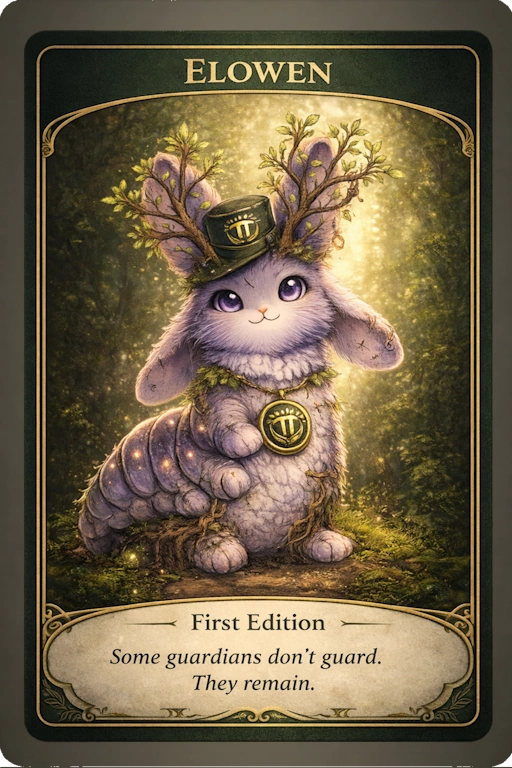

FIRST EDITION
Elowen — First Edition
The first recorded shared digital artifact connected to Elowen. It does not introduce the presence, but gives it a first defined form within the forest.
This edition records shared participation in real-world reforestation activity. It does not represent ownership of trees or land.
Reforestation Record →
Shows the planting or CO₂ offset activity associated with this edition.
Available on GPM (Pi Network) →
This edition can be obtained through GPM, a marketplace within the Pi Network ecosystem.
File Authenticity →
Confirms that the artifact file was published by The Pioneer Forest and has not been altered.
Status: Open for participation
Participation is made available through GPM on the Pi Network. See Transparency page for full explanation →